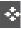

Pinning a CAS Glyph Information Balloon
To pin a CAS glyph information balloon:
-
Click the required CAS glyph generated on the layout canvas.
The related information balloon appears, displaying a Pin icon ( )on the top right corner. -
Click the Pin icon to replace it with the Delete icon (
 ).
).
The information balloon is now ready to be moved around on the layout canvas and placed appropriately. -
Drag the information balloon and drop it at an appropriate location on the layout canvas.
Analyze the generated markers and resolve them using appropriate commands from the shortcut menu. When the markers are resolved and the balloon information is no longer needed on the layout canvas, delete the pinned information balloon. - Click the Delete icon ( ) on the information balloon to delete the pinned balloon.
Related Topics
Checking a Layout Against a Schematic
Pinning a CAS Glyph Information Balloon
Return to top